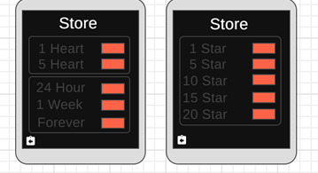
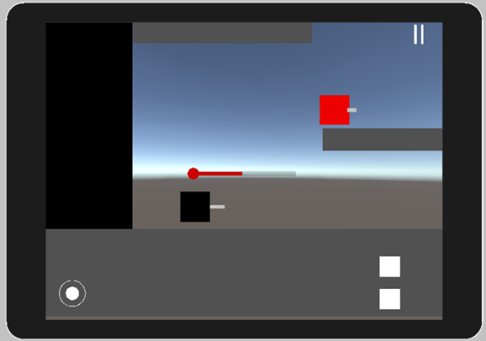

I am graduate from Staffordshire University wiht a 1st Degree in Computer Game Development.
Mario recreation
This project was a replica creation of a beloved Mario level.
It was created in visual studio using C++ and an SDK add on called SDL.
This SDK allows the creation of a window that can allow a game to be created like Mario it would also allow keyboard inputs like WASD.
Characer
The main thing that was created was a Character.h class this would include a collision, a bool checking if the character is moving left or right, a 2D texture loader and movement.
These were set in the character.cpp and would be used in other characters like Mario and Luigi by inheriting form the character.h class.
In the Mario and Luigi class, they contain code that will detect when the player is pressing WASD or the 4 directional keys.
If the player presses A or D the class will detect this and make the character face in that direction.
The characters can wrap around the screen by using the window boundary and adding extra pixels to make it look natural.
Mario and Luigi have extra code that would allow then to have lives, this is set to 3 and when the player is hit by a Koppar either Mario or Luigi will lose a life until they are out of lives and hit the game over screen.
Texture Loader
Once the movement had been created for the character a texture now needed to be loaded into the screen.
This started as a texture loader which would look in specific files to find textures that were being added to the game like Mario, Luigi and Koppa.
These textures were usually on a sprite sheet that could have multiple images like the POW block.
To get all the sprite it would divide the sprite sheet up to 3 because they are all in a row.
Next was the renderer function this would take what the texture loader loaded in and display it to the game screen.
This was used mainly for the menu as it would load in the menus when a button was pressed like the start.
Koppa
The Koopa class uses the same class as Mario and Luigi as the renderer needs to be told which way the Koppas are facing, so it can switch the sprite when the Koppa changes direction.
However, the Koppas aren’t able to be controlled but they are spawned continuously in either direction.
Within the code, the Koppa is given a direction and speed to move at the Koppa will keep moving until they die, stunned or reach the end of the map and be deleted to keep the CPU usage down.
A function that the Koppas has it to deal damage to either Mario or Luigi.
The Koppas will have to hit Mario or Luigi to cause damage and the characters are set back at their starting location.
This uses the first sprite on the sprite sheet which is set to a variable that is called later when the Koppas are spawned.
POW block
The POW block is used within the game to stun the Koppas for a short period of time.
When the Koppas are stunned the player can jump on the bellies of the enemies and destroy them gaining points.
After the short period of time, the enemies will begin moving again to there end destination.
The player is given 3 hits on the POW block after each hit the POW block updates it sprite sheet.
After the 3rd hit the block will disappear and reappear after a short period of time.
This part of the POW block makes it interesting when 2 players are playing trying to reach the highest score to win.
SixteenB
This was a group project consisting of 4 members each studying game development and all having a different experience and ideas.
It was created in UE4 and consisted of both C++ and blueprints with a development time of 12 weeks.
The project started with the game document and deciding what genre the game was going to be.
A decision was made to create a first-person survival horror game like Slender man or Outcast.
The decision for first person was to make it immersive and drag the player into this strange new universe.
I worked mostly on the document side of the development.
I started by creating a design document with headings for my fellow members to follow.
I also added in different colours for people to write in so when it comes to presenting and evaluating our work, we can decide who wrote what.
The document was also used to make notes about the game in our meetings and with the colours it made it easier to see who was working on what and when completed they would turn it to black for the final hand-in.
We as a team had set up a weekly meeting where we would meet and discuss what had been done and what is next on our list.
We begin with the genre of the game and we came up with 2 ideas.
1st idea was a time travel the second idea was the first-person survival horror game.
We as a team decide to choose the 2nd idea.
We gave each other roles throughout the development and I was the level design and documentation.
Every week I would add additional information to the document about the game, the levels or controls.
Once the document reached the level design I was tasked with finding asset that we could use within our game, I was also tasked with creating the tutorial level.
I visited the UE4 store and searched online to find some free assets that we could use for the science lab, which was the tutorial level.
As I was working on the level design I used the built-in first-person preset within UE4 to test the tutorial level.
I began by creating a simple 2 story building with some stairs and a starting point for when the player spawns.
Next, I added in some assets I had found like computers, lab materials and creature coming from the other world.
I then came up with an idea of a portal which would be controlled by a button which would activate each ring in sequence.
Smoke was added to the portal to make it look more immersive for the player.
Once I had created the tutorial I began on the marketing plan and how we would push our game out to the public.
I began researching into youtube and twitch channels that play or stream similar games to what we are creating.
From this research, we found 3 youtube and 3 twitch channels that would properly play our game.
I eventually created a game website to show off our game.
This was a first-person game created in unreal engine with a mixture of C++ and blueprints that was created over a period of 12 weeks.
Health System
A health system was created that would allow the player to take damage when colliding with the AI.
This system would also allow the player to pick up health packs around the game world that would increase the player's health a certain amount.
This health system is linked to the HUD this would update when the player either got hit by the AI or collided with a health pack.
The health system was created in C++ and it started by creating some attributes for the player like health and speed. 2 functions were created, the first functions would allow the player to take damage when hit by AI or a pain volume this would then update the HUD showing the player the damage they have taken.
The 2nd function was recover health that would add back health to the player when colliding with a health pack.
If the player's health is lower than a set max health the player could gain health otherwise it would add up to the set max health.
The reason why it was done in C++ than blueprints was because it was more efficient when playing the game as it is run in the background meaning it will not slow the game.
Pickup system
To use the health system a pickup system was needed to be created first.
This class was created with a box and mesh, to begin with.
In C++, an overlap function was created that would detect if the player has entered a sphere collision.
If the player entered this collision it would call the blueprints that are linked.
This allowed for further development of pickups like health, speed, and double jump.
The pickup system was created in C++ because it contained multiple pickups and it was easier to pull from one call than create multiple classes for different pickups.
Functions were created in C++ like AddAmmo that would affect the player ammo when they shot a bullet, and it would update in the function.
Blueprints were then used to take this function and cast it to the player and update the HUD when the player shot, giving them an indication of how many bullets they have left.
Because of the way the base pickup was set up it would allow for other functions like speed, health, and double jump to be created and then cast to the character.
HUD System
The HUD system allows the player stats to be displayed to the screen like the health, ammo, and speed.
Originally a HUD was created in University which was taken and adjusted to fit this game.
A function was created which would handler everything that was being added to the player viewport.
To update the health to variables were created a max health and current health.
This would take away the current health from the max health to create a percentage that works with the health bar.
This would load on the load up of the game.
This was done in C++ as it allows multiple UI elements to run through a function, it also allows access for more UI elements in the future.
All that is needed is that the UI element has a widget created and is linked in the C++.
AI Spawner
Once the HUD was completed an AI spawner was created this would allow engines to spawn around the game world that would track the player everywhere they would go.
This was done by using a Nav-mesh of the game world this would allow the AI to roam around in this area.
Built into the AI was a system that would damage the player when hit by an AI, this could be set within the editor to make it easier for testing purposes.
The AI amount was also able to be adjusted within the editor to make it harder or easier for the player.
Originally there were about 100 AI spawning at after each other and this was a problem as the computer couldn't keep up with that the amount of AI and it was hard for the player to kill all these AI even when they were 1 shot kills.
The AI spawner was created in blueprints as a testing purpose but never evolved from that into C++.
The AI was created with the preset third person character in UE4 which would take its commands from an AI controller.
Linked to that was a blackboard which contained a key for example the player.
Next step was creating a behaviour tree which would tell the AI what to do and where it is going.
Using the key that was made in the blackboard the AI would move to the player wait a couple of seconds and move again, this was repeated by the AI until they died or the player died.
Menu System
The last thing that was created was a menu system as the mechanics of the game was most important.
This system would allow the player to enter the game, quit the game or pause the game.
The system started with a base widget class built-in C++ that was able to be duplicated and the code changed to fit the menu that was needed.
The first menu was the start screen this consisted of a title and 2 buttons, a play and a quit button.
The start button will start the game and it would remove the current menu from the screen throwing the player into the game.
The quit button will exit the application.
Another menu that was created was a pause menu that would allow the player to pause the game if they are having a break or stuck.
This was linked the P button on the keyboard which would stop the game time and pop up a menu, that consisted of a resume button and menu button.
The resume button would set the game time back to 1 and remove the widget from the screen.
The menu button would quit the game and remove the current widget and add the menu widget back.
The next menu was a win or lose condition, this would check to see if the player had lost all their health or to see if they had killed all the AI which would open up a door within the level the player would need to find to win the game.
Spy force is currently in development.
A simple prototype has been created that includes the basic mechanism of the game.
The game is being made in Unity using C# for mobile devices.
It has currently been tested on a device simulator within unity to make sure things work before downloading it to a phone to test.
The game will eventually feature ads, levels that take place around the world and a unique story.
The ads can be used for the player to gain items to unlock future levels or gain back lives.
There will also be purchasable lives and stars that the player can buy to help them progress through the level for example more lives, unlimited lives, and stars to unlock future levels.

The story of the game will focus on a woman called Megan Johnson as she is recruited by a secret organization that tackles high-value assignments and world-ending circumstances.
The aim of the game is for you the player to take down the evil organization and their leader and find out their secret plan to destroy the world.
The game will consist of simple controls that will allow the player to move around the screen, shoot the AI and jump around the level.
The movement will use a joystick that is limited to left and right, but it will only appear on the screen when the player touches the screen.
For the jump and shoot, there will be 2 buttons that will allow the player to complete these actions, more buttons could be added in the future if needed.

In the prototype has a simple AI that uses a Raycast to check if there is a floor below them or not, if not the AI will turn and go in the other direction.
Another Raycast is used to detect when the player is in a certain range and the AI will shoot the projectile to the player's last position.
If the projectile hits the player, it will lower the player's health. The player can take 2 hits before dying and losing a life.
Future addition
In the future, the game is going to have a full menu system that allows the player to make purchases to help assist them through the game.
The shooting system will be revamped and be a click and drag, that will allow the player to aim at the AI and release to fire the projectile.
The AI will have a better aiming system and maybe a detection zone, so the player has an option to sneak around levels.
The AI might be able to travel to different parts of the level if they hear a noise or to chase the player is, they are still in the detection zone.
About
I am hard working, resilient and a reliable individual who enjoys each aspect of creating and playing games.
I spend a majority of my time playing new games which leaves me thinking about the creations I aspire to develop.
I enjoy the occasioanl trip to the cinema with my friends and binge watching new TV shows.
Being welcomed into a team of developers to further enchance my skills and experience would be an amazing opportunity and one I can't wait to start!
I am very passionate about the game industry be it creating my own game, playing upcoming games on a variety of devices or engaging in new advancements in technology such as VR and AR.
I especially enjoy playing games with my friends and usually spend time between lectures on different consoles.
In addition, I enjoy listening to music at the gym and playing football with my friends.
Education
Sep 2018 - July 2022 | Staffordshire University Stoke-On-Trent | BSc (Hons) Computer Games Development
Sep 2016 - July 2018 | Leeds City College Leeds | Btec Games Development
Hard Skills
I have developed a range of skills using multiple softwares and scripting languages such as:
Visual Studio - I have used C++ to create a FPS style game and basic programs.
Unreal Engine - I have used blueprints and C++ together to make a FPS game. I also have used blueprints within my DNA project which was out of University.
I did this with another student and I have just finished a tower defence style game.
HTML5 - I have had experience using Notepad++, Atom.io, JavaScript and Dreamweaver to build websties and develop my skills.
Unity - I am currently using Unity to write actions scripts for my VR game, as well as learing the engine for my racing game.
soft Skills
I have developed the skills to create my own documentation such as design document, marketing plans and weekly forum posts.
This has enabled me to desgin any game specifically for certain audiances and it has helped me develop my understanding of the procces of making a game.
I am currently using GitHub for version control so that i am able to go back to previous version and make changes to my game.
Experiences
Conferences
I have been to the Uki student Conferences for the last 2 years.
This is where I was spoken to by current game developers and people working in the game industry about there experiences and game they have worked on.
GameJam
I have participated in a GameJam where me and my team created a world war like maze. We had a short amount of tiem to make the game but at the end we presented it to someone from codemasters.